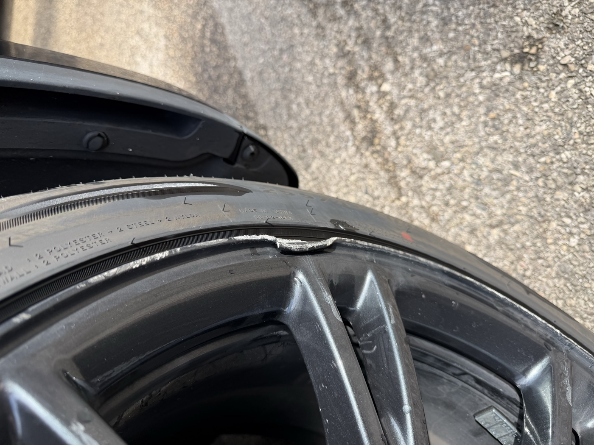

Les Tesla sont de plus en plus présentes dans les rues de Lyon et de l'Ouest Lyonnais. À Tassin-la-Demi-Lune, à Écully, à Dardilly — le Model 3 et le Model Y sont devenus des habitués des parkings d'entreprise et des allées résidentielles. Et comme tous les véhicules, leurs jantes s'abîment.
La bonne nouvelle pour les propriétaires de Tesla : leurs jantes sont réparables comme les autres. La particularité : les finitions Tesla ont des spécificités propres qu'il faut connaître pour éviter les mauvaises surprises.
Les jantes Tesla : modèles et finitions
Tesla propose plusieurs designs de jantes selon les modèles et les packs. Chaque design a ses caractéristiques de finition :
Model 3 :
- Aero 18" — Les jantes de base avec cache-roue en plastique. Sous le cache, la jante est en finition argent standard. Si le cache est retiré, la jante nue est souvent moins raffinée — un point à vérifier avant de commander la rénovation.
- Gemini 19" — Finition anthracite satiné avec des rayons fin design. Très populaires, très exposées aux frottements de trottoir sur les flancs fins des rayons.
- Nova 18" / Photon 18" — Finition argent ou noir satiné selon les versions. Standard et réparable facilement.
Model Y :
- Gemini 19" — Idem Model 3, très répandues. Rayons fins en anthracite satiné, sensibles aux chocs latéraux.
- Überturbine 20" — La jante la plus reconnaissable de Tesla. Design turbine en noir brillant avec des zones polies en contraste. Nécessite deux traitements distincts — noir brillant d'un côté, zones polies de l'autre. Complexe mais réalisable.
- Induction 20" (ancienne génération) — Finition noir mat aérospatial caractéristique. Le noir mat est délicat : il ne supporte pas de polissage et nécessite un vernis mat spécifique.
Model S et Model X :
- Tempest 21" — Finition argent ou noir, design à 5 rayons larges. Jante de grande taille, plus exposée aux impacts sur la face avant.
- Arachnid 21" (Model S Plaid) — La jante de sport Tesla. Design complexe multi-rayons, finition noire brillante. Chère à remplacer, réparable dans la majorité des cas.
- Cyberstream 20" / Powertrain 20" (Model X) — Finitions standard ou polies selon les packs.
Les dommages les plus fréquents sur les Tesla lyonnaises
Après plusieurs mois d'interventions sur des Tesla dans la région lyonnaise, un constat s'impose : les dommages sont prévisibles et concentrés sur quelques types de situations.
Frottements de trottoir sur les Gemini 19" — Les rayons fins de ces jantes sont très proches du trottoir. Un stationnement légèrement décalé, et le flanc du rayon frotte le bord. C'est le dommage le plus courant sur Model 3 et Model Y.
Impacts sur les Überturbine 20" — Le design turbine crée des zones de "poche" entre les ailettes qui concentrent les projections de cailloux. Les micro-impacts sur les zones polies se voient facilement sur le noir brillant.
Perte de brillant sur les jantes noires Tesla — Le noir brillant des Arachnid et des Überturbine est particulièrement sensible aux rayures de lavage et au sable routier. Avec le temps, la surface devient terne et griffée.
Corrosion sous vernis sur les Model 3 ancienne génération — Les premiers Model 3 livrés en France (2019-2021) ont parfois des problèmes de tenue du vernis sur les jantes Aero. Une fois le vernis décollé, la corrosion peut progresser rapidement.
Réparation vs remplacement : le calcul pour les Tesla
Le remplacement d'une jante Tesla d'origine est souvent plus coûteux que pour les constructeurs traditionnels. Tesla ne vend pas ses pièces via un réseau de revendeurs agréés classiques — les jantes neuves passent directement par Tesla, avec des délais et des tarifs à la hauteur.
Une jante Überturbine 20" neuve chez Tesla se commande entre 350 et 550 € l'unité selon le modèle. Une Arachnid 21" peut dépasser 600 € la pièce. Si deux jantes sont abîmées, on arrive rapidement à des montants où la réparation devient très clairement le meilleur choix.
La réparation chez REYNOV pour ce type de jante se situe entre 120 et 220 € par jante selon les dommages et la finition. Le ROI est immédiat.
Un point important : Tesla a également introduit des jantes forgées sur les Model S Plaid et Model X Plaid. Ces jantes forgées ont une résistance plus élevée mais se réparent exactement comme les autres en cas de dommages esthétiques.
Jantes Tesla rayées ?
Envoyez les photos de vos jantes — on identifie la finition, on vous dit si c'est réparable et on vous fait un devis sous 24h. Intervention à domicile.
Devis express 24hRetour de leasing Tesla : ce que Tesla Finance inspecte
Tesla propose ses propres solutions de financement LOA et LLD via Tesla Finance France. Le processus de restitution est différent des loueurs traditionnels — Tesla mandate des inspecteurs indépendants qui appliquent une grille précise.
Sur les jantes, les points contrôlés sont :
- Rayures et frottements visibles, avec seuil de tolérance selon la taille et la profondeur
- Impacts et éclats sur la face avant ou sur les rayons
- État du vernis — décollements, bulles, zones d'oxydation
- Cohérence de finition entre les quatre jantes
Une particularité Tesla : les jantes Überturbine et Arachnid sont des finitions premium qui sont cotées plus cher dans les grilles de restitution. Un dommage sur ce type de jante peut générer une pénalité de 400 à 700 € selon la décision de l'inspecteur.
Si vous avez un Model Y Long Range ou un Model 3 Performance en LOA Tesla, une vérification de l'état des jantes 3 semaines avant la restitution est fortement recommandée. Notre page retour de leasing détaille le processus complet.
Pourquoi le service mobile est particulièrement adapté aux Tesla
Un détail pratique souvent ignoré : les Tesla n'ont pas de roue de secours. En cas d'intervention sur les jantes dans un atelier traditionnel, si quelque chose se passe mal, vous êtes bloqué. Avec un service mobile, le véhicule ne bouge pas — l'intervention se fait sur place, jantes montées.
Autre avantage : les Tesla sont souvent chargées sur borne pendant l'intervention mobile. Vous gagnez des kilomètres pendant qu'on rénove vos jantes.
Enfin, les propriétaires de Tesla sont souvent des early adopters qui apprécient la convenance et l'efficacité. Le service mobile, sans dépôt et sans attente, correspond parfaitement à ce profil.
Tesla dans l'Ouest Lyonnais : où on intervient
Le Model 3 et le Model Y sont particulièrement répandus dans les communes bien connectées aux axes autoroutiers et aux zones de recharge. Dans l'Ouest Lyonnais, on les retrouve massivement à :
- Tassin-la-Demi-Lune — Commune dense avec beaucoup de profils CSP+ et de jeunes actifs en LOA. Le Model 3 et le Model Y y sont très représentés.
- Écully — Cadres et dirigeants, souvent en LOA ou LLD Tesla. Le Superchargeur de la Zone Techlid est à quelques minutes.
- Dardilly — Proximité du Superchargeur Leclerc Dardilly. Forte densité de Tesla dans les entreprises de la Zone Techlid.
- Saint-Didier-au-Mont-d'Or — Propriétaires de Model S et Model X, souvent à titre personnel avec garage privé.
Pour toutes ces zones, le déplacement est inclus. Envoyez les photos de vos jantes via le formulaire, on vous fait un devis sous 24h et on vient chez vous.
Les 5 étapes d'une rénovation Tesla — en images
Voici le déroulé complet d'une intervention réelle sur une jante Tesla — du choc d'origine au résultat final.

